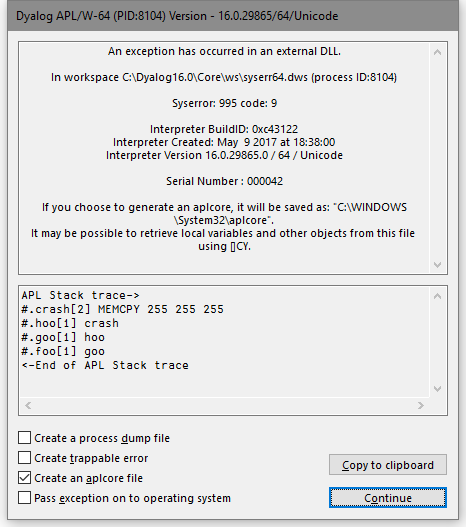

System Errors
Introduction
Dyalog APL will generate a system error and (normally) terminate in one of two circumstances:
- As a result of the failure of a workspace integrity check
- As a result of a System Exception
On Windows, if the DYALOG_NOPOPUPS parameter is 0 (the default), it will display the System Error dialog box (see System Error Dialog Box). This is suppressed if DYALOG_NOPOPUPS is 1.
aplcore file
When a system error occurs, APL normally saves an aplcore file which may be sent to Dyalog for diagnosis. The name and location of the aplcore file may be specified by the AplCoreName parameter. If this parameter is not specified, the aplcore file is named aplcore and is saved in the current working directory.
Normally a new aplcore will replace a file of the same name. However, if AplCoreName contains an asterisk (*), the system will create a new file, replacing the asterisk with a number incremented from the largest numbered file present.
The number of aplcore files retained by the system is specified by the MaxAplCores parameter. If MaxAplCores is 0, the system will not save an aplcore. However, under Windows, if DYALOG_NOPOPUPS is 0, and the user checks the Create an aplcore file checkbox when the System Error dialog box is displayed, an aplcore will be saved regardless of the value of MaxAplCores. See System Error Dialog Box.
Be aware that if your application contains any secure data, this data may be present in an aplcore file, and it may be appropriate to set both MaxAplCores and DYALOG_NOPOPUPS to 0 to prevent such data being saved on disk.
Information that may prove useful in debugging the problem, including (where possible) the SI stack at the point where the aplcore was generated, is by default written to the end of aplcore files; the section begins with the string
'=================== Interesting Information'
Under UNIX, this interesting information section can be extracted from the aplcore as follows:
sed -n '/======== Interesting Information/,$p' aplcore
To prevent this information from being written to the aplcore file, the APL_TextInAplCore parameter should be set to 0.
Workspace Integrity
When you )SAVE your workspace, Dyalog APL first performs a workspace integrity check. If it detects any discrepancy or violation in the internal structure of your workspace, APL does not overwrite your existing workspace on disk. Instead, it displays the System Error dialog box and saves the workspace, together with diagnostic information, in an aplcore file before terminating.
A System Error code is displayed in the dialog box and should be reported to Dyalog for diagnosis. This information also appears in the Interesting Information section of the aplcore file.
The internal error that caused the discrepancy could have occurred at any time prior to the execution of )SAVE, and it might not be possible for Dyalog to identify the cause from this aplcore file.
If APL is started in debug mode with the -Dc, -Dw or -DW flags, the Workspace Integrity check is performed more frequently, and it is more likely that the resulting aplcore file will contain information that will allow the problem to be identified and corrected. It is also possible to enable or alter the debugging level from within APL using the SetDFlags method; Dyalog support will direct the use of this feature when necessary.
System Exceptions
Non-specific System Errors are the result of Operating System exceptions that can occur due to a fault in Dyalog APL itself, an error in a Windows or other DLL, or even as a result of a hardware fault. The following system exceptions are separately identified.
| Code | Description | Suggested Action |
|---|---|---|
| 900 | A Paging Fault has occurred | As the most likely cause is a temporary network fault, recommended course of action is to restart your program. |
| 990 & 991 | An exception has occurred in the Development or Run-Time DLL. | |
| 995 | An exception has occurred in a DLL function called via ⎕NA |
Carefully check your ⎕NA statement and the arguments that you have passed to the DLL function |
| 996 | An exception has occurred in a DLL function called via a threaded ⎕NA call |
As above |
| 997 | An exception has occurred while processing an incoming OLE call | |
| 999 | An exception has been caused by Dyalog APL or by the Operating System |
Recovering Data from aplcore files
Objects may often (but not always) be recovered from aplcore using )COPY or ⎕CY. If the aplcore contains a workspace with more than one instance of the same name on the stack, ⎕CY copies the most local object whereas )COPY copies the global one.
Be aware that in many cases an attempt to )COPY from or )LOAD an aplcore is likely to result in a further syserror; this may result in the original aplcore being overwritten, thus losing the contents of that file. It is therefore worth while taking a copy of the aplcore before attempting to )COPY from it. Attempting to copy specific items is more likely to be successful than copying the entire workspace from the aplcore.
Legacy
Prior to Dyalog v14.1 under Microsoft Windows, because (by default) the aplcore file has no extension, it was necessary to explicitly add a dot, or APL would attempt to find the non-existent file aplcore.dws.
Reporting Errors to Dyalog
If APL crashes and saves an aplcore file, please email the following information to support@dyalog.com:
- a brief description of the circumstances surrounding the error
- details of your version of Dyalog APL: the full version number, whether it is Unicode or Classic Edition, and the BuildID. This information appears in the Help->About box; the Copy button copies this information into the clipboard, from where it can be pasted into an email etc.
- a compressed form of the aplcore file itself
If the problem is reproducible, that is, can be easily repeated, please also send the appropriate description, workspace, and other files required to do so.
System Error Dialog Box
The System Error Dialog illustrated below was produced by deliberately inducing a system exception in the DLL function memcpy(). The functions used were:
∇ foo
[1] goo
∇
∇ goo
[1] hoo
∇
∇ hoo
[1] crash
∇
∇ crash
[1] ⎕NA'dyalog64|MEMCPY u u u'
[2] MEMCPY 255 255 255
∇Under a 32-bit interpreter, the ⎕NA call should refer to dyalog32.

Options
| Item | Description |
|---|---|
| Create a process dump file | Dumps a complete core image, see below. |
| Create Trappable Error | If you check this box (only enabled on System Error codes 995 and 996), APL will not terminate but will instead generate an error 91 ( EXTERNAL DLL EXCEPTION ) when you press Dismiss . |
| Create an aplcore file | If this box is checked, an aplcore file will be created. |
| Pass exception on to operating system | If this box is checked, the exception will be passed on to your current debugging tool (for example, Visual Studio ). See PassExceptionsToOpSys . |
| Copy to clipboard | Copies the contents of the APL stack trace window to the Clipboard. |
Create a process dump file
Under Windows the Create a process dump file option creates a user-mode process dump file , also known as a minidump file, called dyalog.dmp in the current directory. This file allows post-mortem debugging of a crash in the interpreter or a loaded DLL. It contains much more debug information than a normal aplcore (and is much larger than an aplcore) and can be sent to Dyalog Limited (zip it first please). Alternatively the file can be loaded into Visual Studio .NET to do your own debugging.
Debugging your own DLLs
If you are using Visual Studio, the following procedure should be used to debug your own DLLs when an appropriate Dyalog APL System Error occurs.
Ensure that the Pass Exception box is checked, then click on Dismiss to close the System Error dialog box.
The system exception dialog box appears. Click on Debug to start the process in the Visual Studio debugger.
After debugging, the System Exception dialog box appears again. Click on Don't send to terminate Windows' exception handling.
ErrorOnExternalException Parameter
This parameter allows you to prevent APL from taking the actions described above when an exception caused by an external DLL occurs. The following example illustrates what happens when the functions above are run, but with the ErrorOnExternalException parameter set to 1.
⎕←2 ⎕NQ'.' 'GetEnvironment' 'ErrorOnExternalException'
1
foo
EXTERNAL DLL EXCEPTION
crash[2] MEMCPY 255 255 255
^
⎕EN
91
)SI
crash[2]*
hoo[1]
goo[1]
foo[1]Hints and Recommendations
Dyalog Ltd recommends that you only enable ErrorOnExternalException while developing or debugging an application; ignoring such errors might result in corruption in the workspace, which could lead to unexpected errors later in the application.
What should I do if Dyalog hangs?
If Dyalog for Windows hangs, you should generate a process dump file and send it to Dyalog Support, along with your Build ID.
To do this:
- Start Task Manager (as a user who has administrative privileges)
- Go to the Processes tab
- Right click on the
dyalog.exeprocess and choose Create Dump File. Windows will create a process dump file inC:\Users\<your name here>\AppData\Local\Temp\dyalog.DMP - Compress this file and send it to Dyalog. If it is less than 10 Mb in size, send it to Dyalog Support as an email attachment. If it is more than 10 Mb, upload it via the MyDyalog/My Account page or contact Dyalog support to request an account on our FTP server.